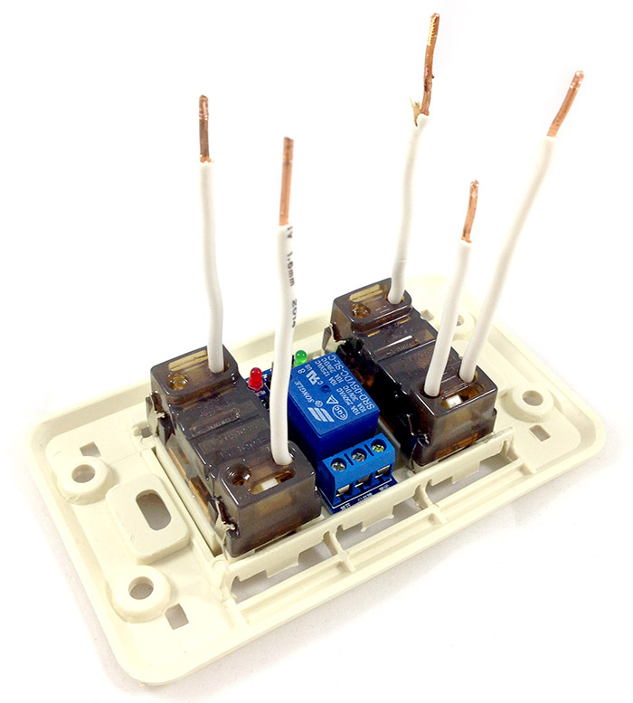
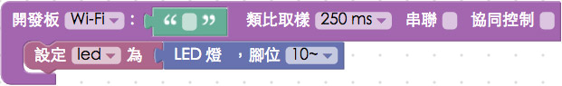
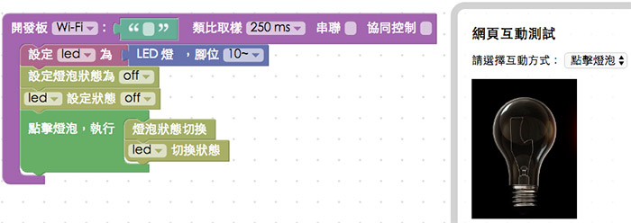

教學範例 32：智慧插座 DIY
之前在「教學範例 14：繼電器控制風扇旋轉」有介紹過繼電器的應用，如果我們將繼電器和日常生活中的插座結合，就可以利用 Wi-Fi 來操控，將平凡無奇的插座升級成為可以光感、聲控、遠端遙控的智慧插座囉！
範例影片展示
接線與實作
我們使用的插座有兩個插孔，其中一個插孔會接上家用電，同時這個插孔會提供 Webduino 開發板電源，然後透過繼電器來控制另外一個插孔的供電與否，因此我們會把接在插孔上的單心線，接到繼電器的「公共」與「常開」端，然後繼電器的 VCC 接在開發板的 5V 或 3.3V，GND 接在 GND，Vin 訊號腳可以接在 2 ~ 13。

所需材料列表：

一開始先把插座和插座背板結合，插座有卡榫，直接裝上去就可以。

中間的空間剛好可以放入繼電器，可以直接卡進去或是用熱熔膠固定，插座則看照片放入五根單心線，單心線很硬，直接塞進去插座的接孔內就可以 ( 內有金屬夾片會自動卡住 )

組合插頭與電線，直接把電線的頭去皮，分別鎖到插頭上即可。

把單心線和電線，用快速接頭連接，同時也把單心線接到繼電器上面 ( 公共端 與 常開端 )。

繼電器的另一側用杜邦線接出來。

組合外殼。

上蓋用螺絲固定 ( 若螺絲太小可用墊片與螺帽輔助 )。

和開發板連線就完成囉！插座上有兩個插孔，一個是固定供電給開發板，透過 Wi-Fi 來控制另外一個插孔有沒有電。

Webduino Blockly 操作解析
打開 Webduino Blockly 編輯工具 ( https://blockly.webduino.io )，把開發板放到編輯畫面裡，填入對應的 Webduino 開發板名稱，然後放入繼電器或是 LED 的積木 ( 這裏我們使用 LED 的積木 )，按照上面的接線圖是接開發板的 10 號腳，這裏腳位我們設定為 10。

這裏我們要來使用網頁互動測試區域裡的燈泡控制插座供電與否，一開始先放入設定燈泡裝態 off 以及 LED 狀態 off 的積木，讓兩者狀態一致，接著放入點擊燈泡的積木，點擊時候的行為就是切換 on 與 off 的狀態。

確認開發板上線 ( 點選「檢查連線狀態」查詢 )，點選右上方紅色按鈕執行，在智慧插座上接個電燈或電扇，電燈或電扇的開關先打開 ( 此時是不會亮或不會動的 )，點選網頁的燈泡，就會看到可以透過網頁控制了。
( 解答：https://blockly.webduino.io/#-KLFXif-dpr6cgel5YHi )
既然已經可以用網頁透過 Wi-Fi 操控，我們就可以來做個聲控智慧插座，將剛剛燈泡的積木換成語音辨識的積木，辨識開燈關燈的文字，聲控電燈就完成了。

範例解析 ( 完整程式碼、檢查連線狀態 )
HTML 的 header 引入 webduino-all.min.js，目的在讓瀏覽器可以支援 WebComponents 以及 Webduino 所有的元件，如果是用 Blockly 編輯工具產生的程式碼，則要額外引入 webduino-blockly.js。
<script src="https://webduino.io/components/webduino-js/dist/webduino-all.min.js"></script>
<script src="https://webduinoio.github.io/webduino-blockly/webduino-blockly.js"></script>
JavaScript 基本上就是 LED 的控制程式，非常的簡單 ( 可參考 教學範例 1：控制單顆 LED 燈 )。
var led;
boardReady('', function (board) {
board.systemReset();
board.samplingInterval = 250;
led = getLed(board, 10);
document.getElementById("demo-area-02-light").className = "off";
led.off();
document.getElementById("demo-area-02-light").addEventListener("click", function(){
if (document.getElementById("demo-area-02-light").className == "on") {
document.getElementById("demo-area-02-light").className = "off";
} else {
document.getElementById("demo-area-02-light").className = "on";
}
led.toggle();
});
});
以上就是智慧插座 DIY 以及相關的控制方式。
完整程式碼：https://bin.webduino.io/basop/edit?html,css,js,output
解答：https://blockly.webduino.io/#-KLFXif-dpr6cgel5YHi
如果您還想了解更多，可以參考：
2. Blockly 教學：https://goo.gl/Y8sRkl
3. 產品總覽：https://webduino.io/buy.html
4. 露天賣場：http://goo.gl/0Dj9ip